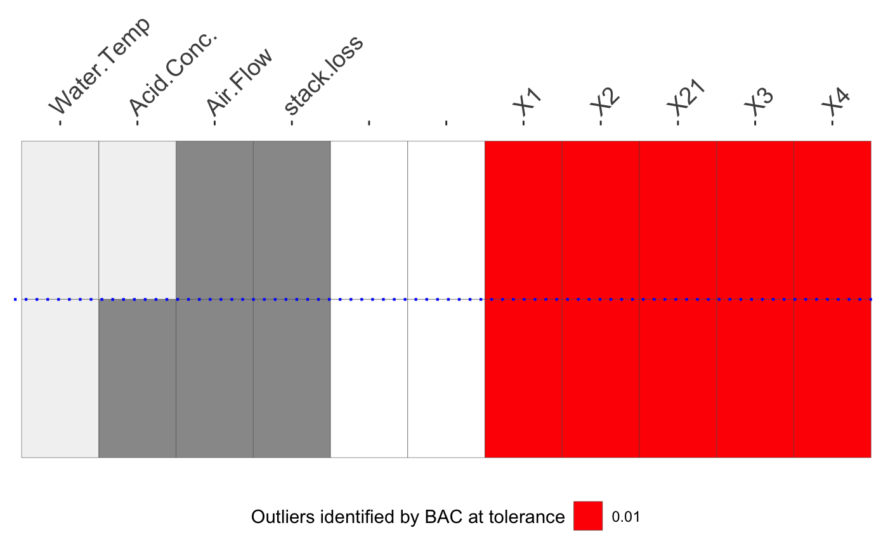

O3plotT.RdFunction for drawing Overview of Outliers (O3) plots for one method and up to 3 tolerance levels and for drawing supporting parallel coordinate plots.
O3plotT(outResults, caseNames=paste0("X", 1:nrow(outResults$data)), sortVars=TRUE, coltxtsize=14, O3control=O3plotColours())
| outResults | a list for each tolerance level, and within that for each variable combination, of the variables used, the indices of cases identified as outliers, and the outlier distances for all cases in the dataset. |
|---|---|
| caseNames | the ID variable used to identify the cases in an O3 plot, the default is the rownames from the dataset (so that they will then just be X7, X11, etc.) |
| sortVars | sort the variable columns by how often the variables occur in combinations, otherwise keep the variable order in the dataset |
| coltxtsize | set the size of text for column names in O3 plots (useful if there are so many columns that names overlap) |
| O3control | A list of colours for O3 plots. If omitted, |
This function takes the output from O3prep and draws an O3 plot with up to 3 different tolerance levels. The default colours are khaki for the least strict tolerance level, yellow for the next, and red for the strictest.
The two parallel coordinate plots, one using the raw data and one using outlier distances, are examples of what can be done to explore the results in more detail. If you want these plots with other highlighting then you can use outsTable with either the dataset or the Ds array to draw them using ggparcoord from GGally or whatever graphics tool you prefer.
The plots produced are ggplot objects so that you can work with them—to some extent—directly. In particular, plot margins can be set using + theme(plot.margin = unit(c(t, r, b, l), ''cm'')), which is useful when the cases are labelled with the caseNames option and you need more space to the right of the plot.
numbers of outliers found for the specified tolerance levels
a parallel coordinate plot of all the data with cases ever found to be outliers coloured red
an O3 plot
a parallel coordinate plot of the outlier distances calculated for each variable combination for the full dataset with cases found to be outliers at the strictest tolerance level coloured red
a table of all outliers found by case, variable combination, and tolerance level. The variable combination labels are a binary coding in the original order of the variables in the dataset.
a three-dimensional array of tolerance levels by variable combinations by cases of the outlier distances calculated.
O3plotColours, HDoutliers in HDoutliers, FastPCS in FastPCS, mvBACON in robustX, adjOutlyingness in robustbase, DDC in cellWise, covMcd in robustbase
#> 0.05 #> 4a1$gO3#> 0.01 #> 5b1$gpcpb1$gO3